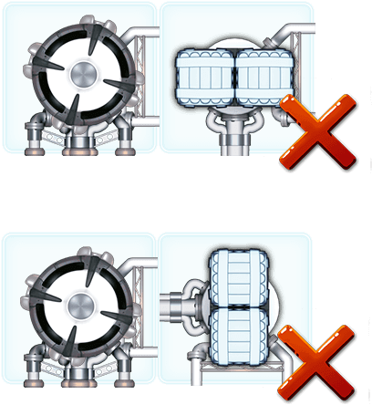
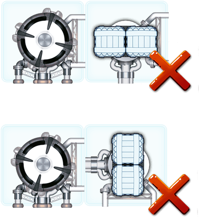
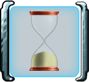

Construction du vaisseau

Avant de vous élancer à travers la Galaxie, vous devez construire votre vaisseau. Vous commencez avec un composant de départ auquel vous allez ajouter de nouveaux composants, un à un. Chaque composant ajouté doit être rattaché à un composant déjà en place. Vos adversaires construisent eux aussi leur vaisseau, simultanément.
Cette page décrit la construction en temps réel. La construction au tour-par-tour est sensiblement identique, mais ses quelques différences sont précisées sur une page dédiée.
Classes de vaisseau
Certains vaisseaux sont plus grands que d’autres. Le vaisseau ci-dessus est un vaisseau de Classe I, mais vous pourrez être amené à piloter des vaisseaux de Classes II ou III, bien plus grands. Tout va dépendre du niveau du vol. Les vols de niveaux élevés vous permettront de piloter des vaisseaux plus grands, mais ils vous obligeront aussi à faire face à des cartes Aventure plus nombreuses... et plus ardues.
Les emplacements (cases) délimitent la forme et la taille du vaisseau, c'est-à-dire le nombre maximum de composants que vous pourrez y ajouter. Essayez de construire un vaisseau qui occupe le plus d’emplacements possible.
Révéler les composants
Révélez un composant en le faisant glisser sur votre vaisseau. Vous pouvez soudez ce composant à votre vaisseau, le remettre dans le tas de composants ou le conserver pour plus tard.
Les composants que vous révélez sont également révélés à vos adversaires. De même, les composants que vos adversaires remettent dans le tas central vous sont aussi révélés. Ainsi, plus la construction avance, plus des composants sont visibles dans le tas de composants.
Attacher les composants
Faites glisser un composant sur votre vaisseau pour voir où il peut être placé. Tous les emplacements autorisés sont surlignés. Lorsque vous relâchez un composant sur un emplacement autorisé, il pivotera automatiquement pour que ses connecteurs s’alignent avec ceux déjà en place.
Cliquez sur le nouveau composant pour le faire pivoter. Il tournera en vous proposant uniquement les orientations autorisées.
Vous pouvez faire glisser le nouveau composant vers un autre emplacement autorisé ou le faire glisser sur le tas de composants pour l'y reposer. Si vous relâchez un composant sur un emplacement non autorisé, il retournera automatiquement à l’endroit où vous l’avez pris.
Soudure
Dès que vous faites glisser un nouveau composant sur votre vaisseau, le précédent composant est automatiquement connecté et soudé à votre vaisseau. Désormais, vous ne pouvez plus le déplacer.
Connecteurs
Les composants ne peuvent être placés que dans certaines positions et orientations. Pour comprendre ces limitations, vous devez comprendre le fonctionnement des connecteurs.
Chaque composant est formé d’un module fonctionnel équipé de 1 à 4 connecteurs. Chaque connecteur peut être simple, double ou universel.
N’importe quel connecteur peut être rattaché à un connecteur de même type, et un connecteur universel peut être rattaché à n’importe quel type de connecteur.
Les bords sans connecteur sont appelés bords lisses. Aucun connecteur ne peut être placé à côté d’un bord lisse.
 

Chaque composant que vous placez doit être rattaché au reste de votre vaisseau spatial. Si plusieurs de ses côtés sont en contact avec le vaisseau, tous les connecteurs doivent être rattachés conformément aux règles présentées ci-dessus. Deux bords lisses peuvent se retrouver côte à côte si le composant que vous venez d’ajouter est rattaché de manière conforme au vaisseau, par un autre côté. Votre vaisseau doit, à tout moment, n'être formé que d'une seule partie.
Pas d’inquiétude. Le jeu ne vous laissera pas réaliser une connexion non valide.
Composants du vaisseau
Le composant de départ représente la cabine de pilotage. Elle dispose de 4 connecteurs universels, ce qui permet de s’y rattacher facilement. Le hangar fourmille d’autres composants que vous rêvez de rattacher à votre vaisseau :
 Cabines
Cabines  Moteurs
Moteurs  Cargo-containers
Cargo-containers  Structures Modulaires
Structures Modulaires  Supports de vie
Supports de vie Construire le vaisseau idéal
Votre vaisseau doit être solide, bardé de canons et de moteurs, débordant de cabines, d'accumulateurs à énergie, de cargo-containers, et être entièrement protégé derrière de solides boucliers.
Connecteurs exposés
Les connecteurs qui ne sont pas connectés (c’est-à-dire non adjacents à un autre composant) sont considérés comme exposés..
Laisser des connecteurs exposés est autorisé bien que cela augmente le risque de voir votre vaisseau endommagé par des petites météorites.
Les connecteurs exposés peuvent aussi ralentir votre vaisseau s’il rencontre de la Poussière d’Étoiles.

Les embouts des tuyaux exposés s’abîment pendant le vol. C'est la raison pour laquelle Corporation Incorporated attribue un bonus au vaisseau qui dispose du plus petit nombre de connecteurs exposés en fin de vol. Si vous multipliez les connecteurs exposés, un autre pilote gagnera certainement ce bonus à votre place.

Mettre des composants de côté
Pendant la construction, vous pouvez mettre jusqu’à 2 composants de côté. Pour mettre de côté un composant, faites-le glisser sur l’un des deux rectangles prévus à cet effet à gauche de votre vaisseau. Une fois mis de côté, un composant ne peut plus être replacé dans le tas de composants. Vous pouvez en revanche l’ajouter à votre vaisseau à tout moment en le faisant glisser sur un emplacement valide.

Vous avez intérêt à ajouter à votre vaisseau les composants mis de côté et ce avant la fin de la phase de construction. En effet, vous serez pénalisé pour tout composant mis de côté qui ne serait pas rattaché à votre vaisseau (il compterait alors comme un composant perdu pendant le vol.)
Consulter les cartes
Pendant la construction, vous pouvez consulter les cartes Aventure à venir. Regarder ces cartes vous donnera de précieuses informations quant à la manière de construire votre vaisseau.
Pour pouvoir consulter les cartes, il faut avoir placé au moins un composant sur votre vaisseau. Touchez simplement un paquet de cartes pour consulter son contenu.
Cliquez à nouveau pour continuer votre construction. Vous pouvez regarder chaque paquet de cartes autant de fois que vous le souhaitez. Vous ne pouvez cependant pas regarder un paquet en même temps qu’un autre joueur.
Bien entendu, regarder les cartes vous fait perdre un temps précieux, mais les informations que vous en retirerez seront souvent capitales. Par exemple, si vous voyez que beaucoup de planètes seront sur votre route, il sera judicieux de prévoir davantage de cargo-containers.
Seulement 75% des cartes peuvent être ainsi visualisées. Les autres cartes restent secrètes… ce sera la surprise !
Terminer votre construction
Une fois que vous êtes satisfait de votre vaisseau (ou lorsqu’il ne vous reste plus de bons emplacements pour ajouter des composants), vous pouvez terminer votre construction. Certains emplacements peuvent rester vides.
Pour marquer la fin de la construction de votre vaisseau, faites glisser une tuile numérotée depuis le haut de l’écran jusque sur votre vaisseau. Ces numéros indiquent l’ordre dans lequel les pilotes vont s’élancer dans l’espace. Il ne suffit donc pas construire le vaisseau parfait, dénué de tout connecteur exposé… il faut décoller avant vos adversaires ! Enfin la plupart du temps.
Vous jugerez parfois qu’il est préférable de s’élancer derrière d’autres vaisseaux (essentiellement si vous êtes faiblement armé). Pour choisir la tuile qui vous convient, cliquez sur le paquet de tuiles pour qu’elles soient toutes affichées. Vous pouvez alors faire glisser sur votre vaisseau celle de votre choix.
Le sablier
Le sablier indique le temps qu’il reste pour la construction des vaisseaux.
Si personne ne se saisit d’une tuile numéro avant la fin du sablier, la construction continue. Ce n’est que lorsqu’un joueur fera glisser une tuile numéro sur son vaisseau que le sablier sera retourné, indiquant le temps supplémentaire accordé aux autres joueurs.
Si un joueur se saisit d’un numéro avant la fin du premier sablier, le sablier est retourné après s’être écoulé entièrement une première fois.
Une fois que le sablier s’est écoulé deux fois, la phase de construction est terminée. Aucun joueur ne peut ajouter de composant. Les joueurs qui n’ont pas encore saisi de numéro doivent le faire maintenant.
Préparation au décollage !
Si certains joueurs peuvent accueillir des extraterrestres à leur bord, cette possibilité leur est alors proposée. Si aucun joueur ne peut accueillir d’extraterrestre, cette étape est sautée.
La phase de construction est terminée. Il est temps de passer au vol.